对于工程团队来说，构建一套具有可持续性的、多方面质量保证的交付体系建设，能够为业务价值的快速交付搭建起高速公路，也能为交付过程中的质量起到保驾护航的作用。本文为大家介绍持续交付体系在高德的演进与落地。
正如前序中所总结的，我们需要构建一套持续交付体系，从而保证在质量不下降的前提下，在业务价值交付上有更进一步的突破。那么我们先了解一下什么是持续交付以及集团在持续交付的建设上有哪些指引。
2.1 持续交付概念
引用Martin Fowler大师在2013年时发表的文章，对于持续交付的概念有如下的解释：Continuous Delivery is a software development discipline where you build software in such a way that the software can be released to production at any time.
在上述文中，可以提取几个关键词：
什么情况下就可以算是团队达到了持续发布的状态呢？Martin Fowler大师也给出了标准的答案：
那么基于以上的观点，我们在建立自身的持续交付体系时，需要抓住以下几个重点：
2.2 集团的持续交付建设
从理论基础上对于持续交付有了初步了解后，我们从集团层面了解一下是如何定义持续交付的能力，并且对于持续交付提出了哪些效能改进目标，参见阿里技术公众号的文章 《如何衡量研发效能？阿里资深技术专家提出了5组指标》
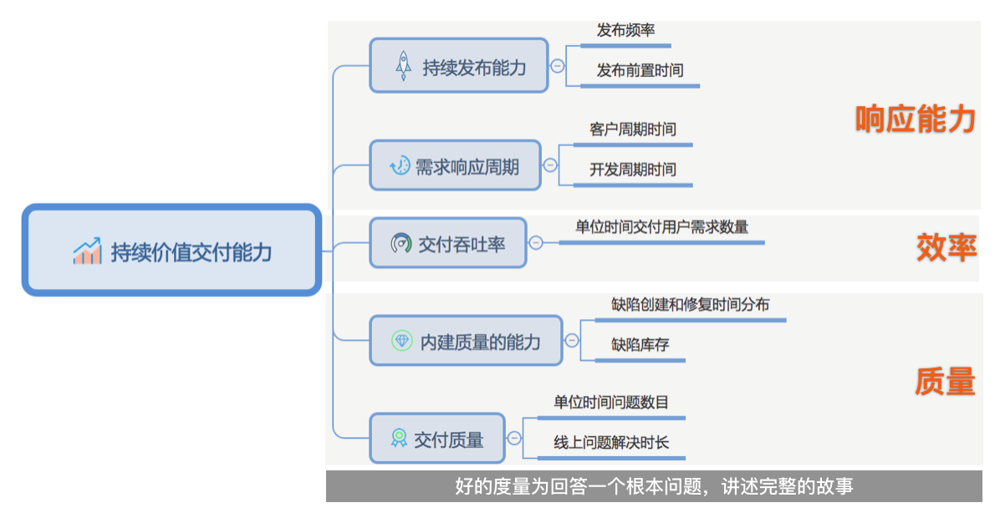
文章中将持续价值交付的能力拆分为3个层面的5组指标，从不同角度对持续价值交付能力进行了衡量。
有了上面专业层面的衡量指标，那我们是如何定义一个优秀的持续交付衡量目标呢？
管理学之父德鲁克说：“如果你不能度量它，就无法改进它”。度量帮助我们更深刻认识研发效能，设定改进方向，并衡量改进效果，所以想要进行效能提升的前提是先能够识别交付过程中的质效瓶颈。
因此，集团在基于部分BU的优秀实践下提出了2-1-1的愿景。
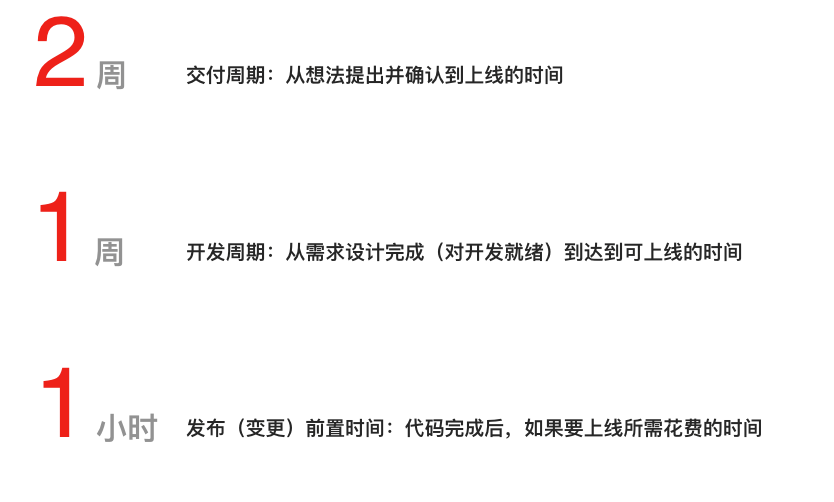
在基于集团愿景的指导下，反观现有高德服务端的交付流程，我们发现在整个流程中，存在很多效率上的竖井，这些效率问题汇总起来，便会成为整个交付流程上的效能瓶颈，进而影响业务价值的尽早交付。
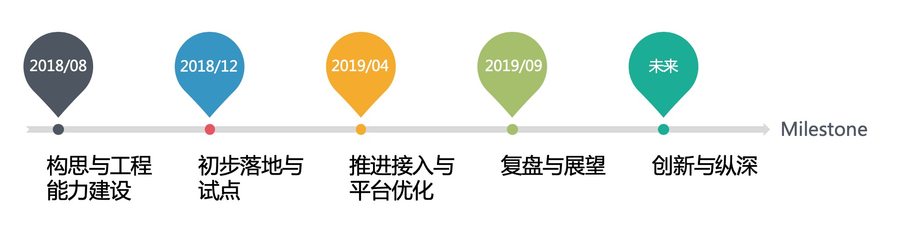
我们先从一个整体的Milestone来回顾一下整个持续交付所经过的一些重要时间节点：
通过milestone的展示，对于高德持续交付体系的演进有了大致的了解后，下面对于落地的过程以及改进的内容进行一下详细的梳理。
3.1 接入持续交付前的交付流程
首先先介绍一下在接入持续交付体系之前，高德的服务端是如何进行迭代的开发与上线的。
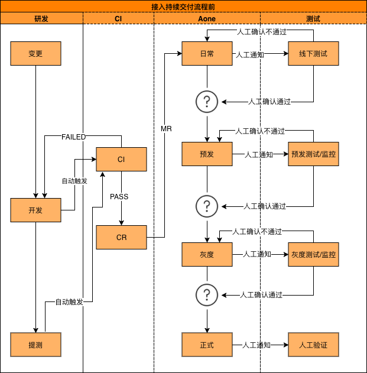
与大部分互联网公司一样，我们将软件的交付拆分为多个周期，进行迭代式的交付，以便增量式的进行用户价值的交付。上图描述了一个正常迭代周期内的研发、测试以及发布的流程，我们可以拆分为以下几个方面：
1.迭代周期起始于代码库的变更
2.在功能开发完成后，研发通过CI系统进行冒烟测试验证，保证服务可以正常启动以及基础功能可用
3.在规定的提测时间前，研发将Feature分支通过CR和MR合并到迭代分支，部署到日常环境进行提测
4.QA在收到提测邮件后，参与到日常环境的测试中
5.当日常环境测试完成后，QA会进行测试报告的产出，并确认日常环境测试通过，可以发布到预发环境
6.部署到预发环境后，会进行流量回放等测试，并最终通过线上的灰度验证，最终发布到正式环境
通过上述的图片和描述，我们可以看到在看似完善的软件交付过程中，却仍然存在如下一些质量、效率问题：
1.需求堆积提测、发布：
目前高德服务端大部分服务采用的是固定迭代周期进行需求发布，规划到迭代周期内的需求，无论需求大小，均需要等到迭代提测时间点进行提测，在迭代的发布窗口进行发布上线。在这种模式下，好的一点是有固定的版本节奏，整体迭代规划性比较强。但是由于提测、发布窗口固定，从而也带来了整体业务价值交付上的等待。因此，需要通过需求拆分来降低需求内部的耦合性，通过改变研发、QA的开发测试模式来降低需求提测中间的竖井等待，从而提升业务价值交付的效率。
2.质量标准不透明，无法及时反馈：
从代码提交一直到最终产品发布，一般情况下，会经历日常、预发、灰度、正式发布几个阶段，每个阶段均有每个阶段需要重点解决的问题以及对质量上的要求也不尽然相同。目前结果的收集汇总和通知都是通过跟版人进行人工收集和统计，并邮件通知项目成员。这样所有的标准控制都是有每个版本的跟版人进行把控，存在信息不透明，反馈不及时的问题。通过质量项标准的建立，以及大盘结果透明和及时的通知，能够解决沟通层面的低效以及在传递过程中信息损耗，从而提升沟通效率，并且避免沟通中的误解。在解决了当前透明化和及时通知的问题后，我们需要进一步从以下两方面进行优化：
将通知进行分类以及优先级处理，降低通知带来的负面影响
通过信息内容优化，辅助业务进行问题的快速定位与排查
3.部署与流程流转过程需要人工参与：
对于持续发布流程来说，有人工参与的地方势必会影响到其中的效率。所以我们将部署和阶段流转拆分为两个方面看：
阶段流转：结合上述的阶段标准，通过程序来计算是否能够满足当前的质量情况是否可以进行阶段的流转，从而排除人为因素以及在阶段流转中的耗时，做到准确
部署：提取相应环境的配置信息，结合Docker化，将打包、部署、健康检查等一些列活动转换为机器的标准化执行，通过标准化来避免人为参与所造成的误差或部署失败的问题
4.多机房正式发布验证人工监督：
目前在应用的正式发布流程中，由于涉及的机房和机器数量较多，业务上会进行分批验证，每发布完成一批机器，研发会通知QA进行这批机器中部分机器的抽检（部分自动化测试），在这其中也存在着效率上的问题。所以如何节约每次上线过程中的人力损耗，也是在追求效能极致上需要解决的问题。
上述的每个细节的问题，都在我们通往快速业务价值交付的道路上设置了障碍。因此，为了达成更早（快）的交付业务价值的目标下，我们必须要在交付效率、质量标准以及结果快速反馈这几方面的进行优化。
3.2 持续交付在高德的落地
基于上节拆分出来的4方面的问题，从工程角度来说，由于迭代的排期，需求的分解与拆分需要进行长期的实践与规划，并且依赖于产、研、测、项乃至于其他部门的支撑，是一个需要进行逐步探索和调整的过程。所以我们将着眼点放到后3方面的建设上，期望在短期内先建立起快速发布的能力，清除在交付过程中效率低下的点。
那么在解决效率问题的建设上，借助于集团提供的发布流程以及较好的部署能力，我们将目前拆解为如下几个维度的抓手：
依托于集团的发布流程，在持续交付体系中建立与集团发布流程对应的标准化流程流转机制
建立服务端质量标准体系，拉通质量标准，去人工化
打通各环节的快速反馈机制，并对发布流程进行管控，让变更结果随时可见
降低发布过程中的人为参与，让整个发布流程做到全程无人值守
通过下面持续交付流程图，我们通过接入后的流程图中看一下以上4个抓手是如何串联起整体高德持续交付流程，并且这几项是如何在高德服务端交付流程中进行落地的。
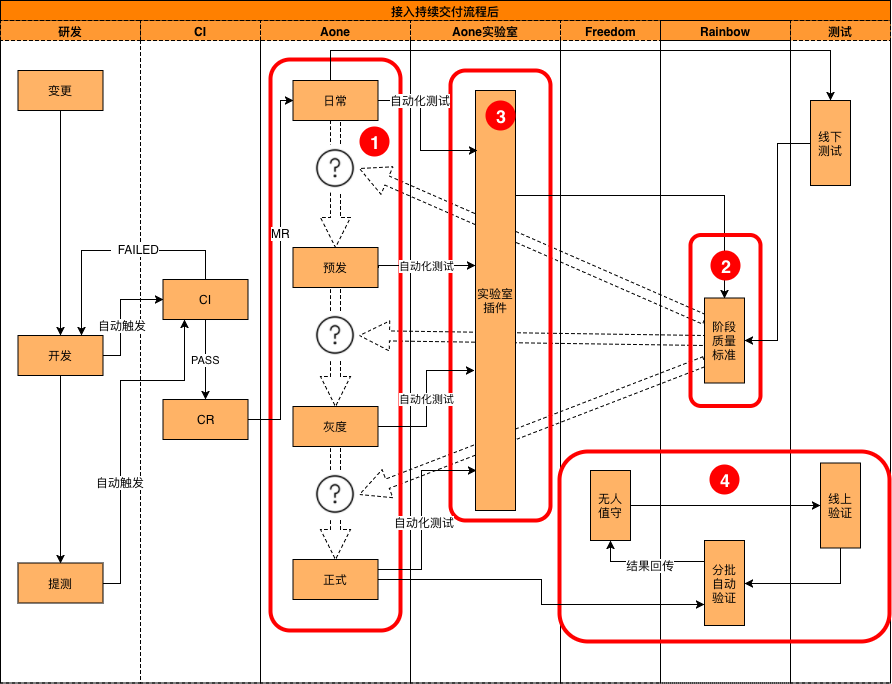
建立标准化的流程流转机制
FY19高德服务端发生的线上问题中，其中由于变更或发布引发的问题占比约12%。通过这组数据，我们期望能够通过建立一套完整的交付流转流程，实现对于变更的控制和管理，降低或避免此类问题的发生。
基于以上立论，我们结合当前服务端交付特点，首先先确立以集团标准发布流程为试点，打通整体持续交付流程；其次，针对各应用中不同的需求，例如：需要性能环境、覆盖率环境等，结合流水线配置，将整个持续交付的流程流转进行优化；最终沉淀为各服务的标准化流程流转机制。通过这种先僵化，后优化，再固化的方式，最终在服务端落地了多套标准的交付流程，避免了在交付环节上的遗漏，以及不规范的操作。
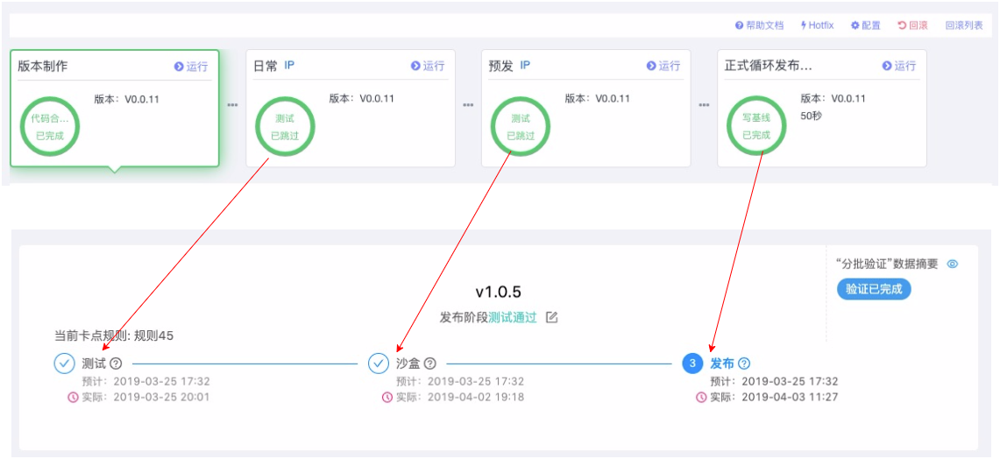
拉通并落地服务端质量体系标准
在高德现有的交付流程中，整体的质量保障手段大部分是在日常阶段进行的，在迭代交付的过程中，各项质量保障手段执行了哪些，执行结果是什么，目前还是通过QA人员进行人工问题收集与汇总，并判定阶段结果的通过与否。在这种情况下，会出现由于跟版人交替导致的质量项遗漏，以及质量标准难以把控的情况。
所以基于这几方面的问题，我们希望通过用机器把控替代原有的人工把控的方式，通过建立标准化的质量模板，来避免整体执行标准不透明，执行结果无沉淀的情况。并且，通过拉通标准，也进一步的规避掉了非重点服务质量检查点遗漏的情况。
通过与业务团队的沟通，我们在第一阶段将现有服务端的质量保证手段进行拆分，提取了在不同阶段中相对重要的12项质量项，通过机器监督替代原有的人为统计的方式。具体覆盖了如下几个维度：
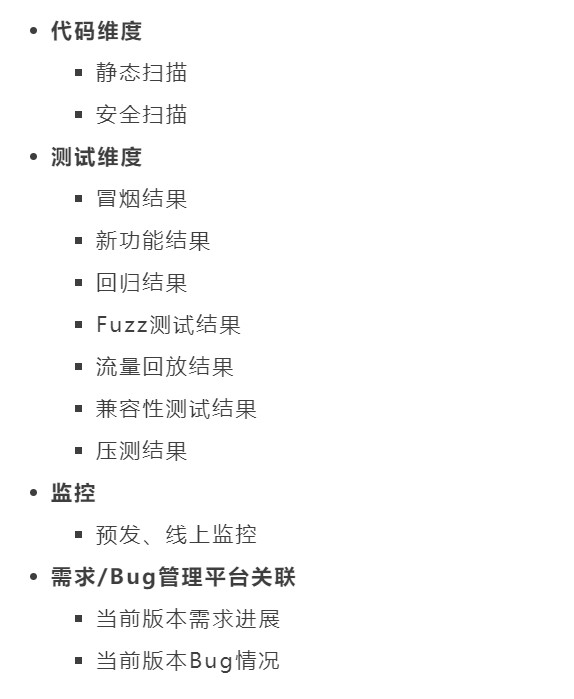
打通各环节的快速反馈机制，并对发布流程进行管控，让变更结果随时可见
当建立起有效的质量体系后，在各阶段有了质量要求以及准入准出标准，解决了信息收集方面的问题，那么接下来我们要思考的就是如何将收集上来的各种信息，有效的反馈到项目中的各个干系人，以便进行后续的决策支撑，并且当未达到阶段准出标准时，有效的控制项目的阶段流转。
我们将问题拆解为两方面看，一是有效反馈、决策支撑，二是流程流转的管控。
从有效反馈、决策支撑方面看：
在接入持续交付之前，各业务线的针对不同类型的自动化测试任务，大部分都有通过Jenkins或测试用例工程反馈结果的通知。但是此类反馈有一个致命的问题，就是通过单项反馈无法纵观全局，不足以支撑后续的决策。
在接入持续交付后，除了原有业务上的反馈机制，平台提供能针对当期版本的整体状态全览，可以通过平台随时观测到当前版本是否达到可发布的状态或者仍然存在哪些不足。将两者结合起来后，针对项目执行人仍然可以通过原有反馈机制了解到单点的质量结果；对于跟版人、一线、二线管理者这类需要纵观全局的角色来说，通过质量大盘，可以有效且明确的知道当前版本与待发布状态的差距，并支撑后续决策以及调整关注的重点
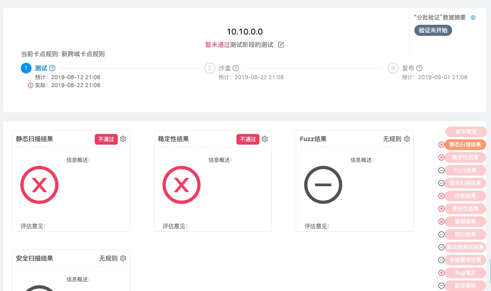
从流程管控方面看：
在接入持续交付之前，可部署的产物无论是否经过阶段验证，都可人为的部署到任意环境下，虽然灵活性比较高，但是也存在一定的质量风险。
在设计持续交付流程时，对于灵活性以及规范性的取舍方面，我们也与业务同学进行了讨论。从全局看，为了避免流程不规范引起漏测或其它线上事故，最终确定在初版时先保证流程流转的规范性，从而降低灵活部署上所带来质量上的风险。平台通过集团实验室插件与集团的部署发布系统打通，当阶段中存在质量项尚未达标的情况下，阻止发布流程进入到下一阶段（环节）。
当基础的持续交付流程落地后，为了满足业务上对灵活性的要求，目前我们也在尝试通过自定义流水线来进行多环境的分发与部署，从而在保证主要阶段流转有管控的同时，增加部署的灵活性，以适应不同的业务形态。
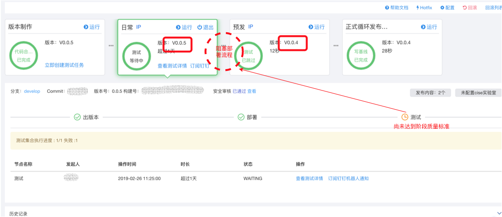
降低流程发布过程中的人为参与，让整个流程做到全程无人值守
我们知道，线上环境部署的复杂程度要远高于在日常和预发环境的部署。由于部分业务线，线上的机器数量众多，且分布在不同机房，为了保证部署时的服务可用性，线上部署时会将上千台机器拆分为多批次进行部署。
在接入持续交付前，为了保证部署后服务的可用性以及对质量上的高标准要求，在每批次部署完成后，QA都需要针对当前批次进行全批次验证或抽测验证，当验证通过后，再进行下一批次的发布以及后续验证。虽然验证本身是通过自动化脚本进行验证，但由于机器和批次比较多，整个发布和验证流程会持续数小时，存在较大的效率问题。
在了解到业务上此效率瓶颈后，通过打通上下游系统，集团标准流程、集团发布系统以及原有业务的线上验证工程，针对不同业务的发布场景，进行发布验证策略的配置化。通过感知部署时的消息，获取当批次部署的机器列表，依据各业务的验证策略配置进行自动化的验证。并且结合线上阶段的报警监控，当某批次发布验证出现问题后，系统可以第一时间定位到具体是哪一批次中的哪台机器发布出现问题，帮助业务进行部署问题的快速定位。
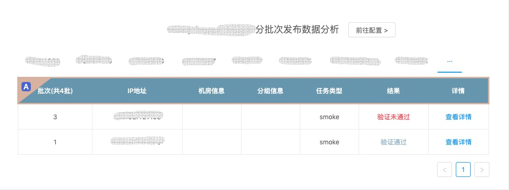
持续交付体系的业务架构
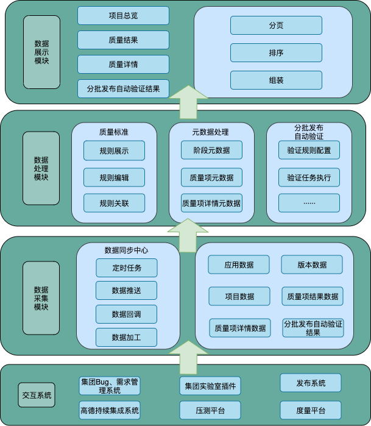
整个持续交付体系建设，目前在高德服务端落地已经有一段时间了，截止到目前为止：
业务线覆盖：整个持续交付体系已经覆盖了高德服务端大部分重点业务
各阶段质量项建设：12项
正式发布阶提效：50%~90%
在获得以上成果的同时，除了上述量化指标外，更有价值的是隐含在背后的研发、测试习惯上的变化。从研发、QA和项目主动发起的缩短项目周期，到QA对于质量项上提出更多的诉求等等，无一不感知到大家对于尽早且高质量的交付业务价值这件事情的重视。当然对于更早（快）的交付业务价值这个目标还有一定的差距，这个也是后续我们与业务线需要共同解决的问题。
有人将持续交付形容为在价值交付上的高速公路，持续交付的落地，标志着价值交付到用户的快速路已经建立完成。但是最终是否能做到更早（快）的交付业务价值，还取决于在这条快速路上行驶的车辆。
根据这个理论，我们除了要保证这条高速公路上不出现坑洼的同时，还要兼顾车辆本身的能力，以及车辆的性能。因此，在车辆出发前，我们更需要通过对车辆的车况进行检查，保证在高速路上行驶的车辆不会因为自身的原因提不起速度。
5.1 车况检查
目前，已有的持续集成系统，仅能够保证车辆在这条路上是能开起来的，车况的检查都是在上了高速后才开始的（大部分的质量保证手段是部署到日常环境后才开始）。所以基于上面描述的指导方针，我们需要尽早的做检查，并且需要做更全面的检查（质量保障手段左移）。
基于这个目标以及结合集团内其他BU的优秀实践，后续我们希望能通过代码门禁的手段，尽早落地这类全面的检查。若要将代码门禁落地，无论是对于工程效率团队亦或是业务研发与QA团队，都有着不小的挑战，我们需要做到以下的转变：
质量保证的同期化能力建设
质量保证的稳定性与耗时优化
研发提交代码流程的改变
单元测试能力的建设
Code Review的常态化落地以及规范总结
代码覆盖率，业务场景覆盖率的支撑
代码合并的门禁管控能力
代码扫描结合CodeReview的总结的落地
当逐步完成以上任务的落地后，能够消除批量交付业务价值交付中相互等待的时间，并且也能够保证车辆在持续交付这条高速路上行驶得更快更稳定。
5.2 车辆性能提升
前面车辆检查可以说是在车辆上路之前的检查与保障，将质量保证手段左移到研发阶段。相对的，我们希望通过车辆性能提升的方法，在车辆上路后，能够让车辆行驶提速更快，拉高速度的上限。
精准回归：通过感知代码的变化，推导出代码变动所影响的Case，让质量保障更为精准且耗时更少
场景覆盖：结合线上流量回放，通过代码覆盖、场景覆盖进行查缺补漏，让质量保障更完整
问题定位：结合失败用例，快速的进行问题定位与反馈
同期化能力：结合云歌Case平台，通过接口定义进行测试代码与研发代码同期化编写能力的加强，以及降低Case编写和维护成本方面的探索
降低数据干扰：基于高频、隔离和用完即抛的理论实践，降低日常环境的数据干扰，让质量保证更有效
大数据分析：
利用线上日志分析，产出线上真实场景模型，降低压测平台语料准备耗时，场景筛选上做到精确、高效
大数据运用：
结合线上真实场景以及场景覆盖率，构造线下回归Case集，降低业务回归Case维护成本，提升Case有效率，并且能够快速定位问题
利用场景回放，以及记录回放中间产物，解决在单测时场景构造问题
随着持续交付快速通道的搭建完成，期望通过以持续交付体系为契机，在多个纵向维度进行深入挖掘，并完善整个持续交付体系，最终在更早（快）的交付业务价值的前提下，能够有更高的质量以及更低的人工成本，保证市场竞争的先机，让高德在激烈的竞争中优势更为明显。